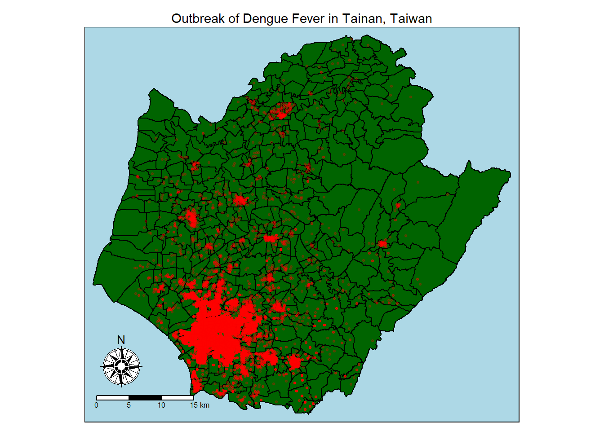
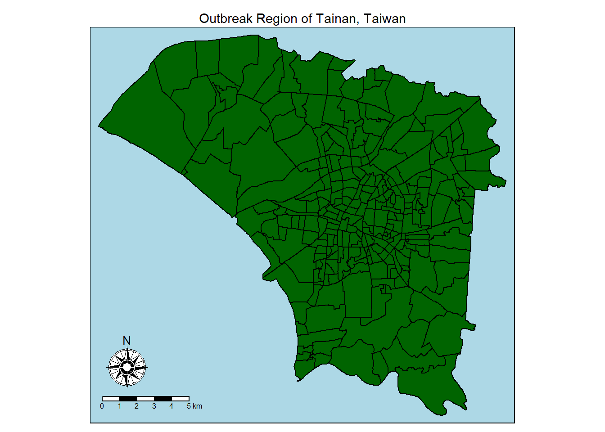
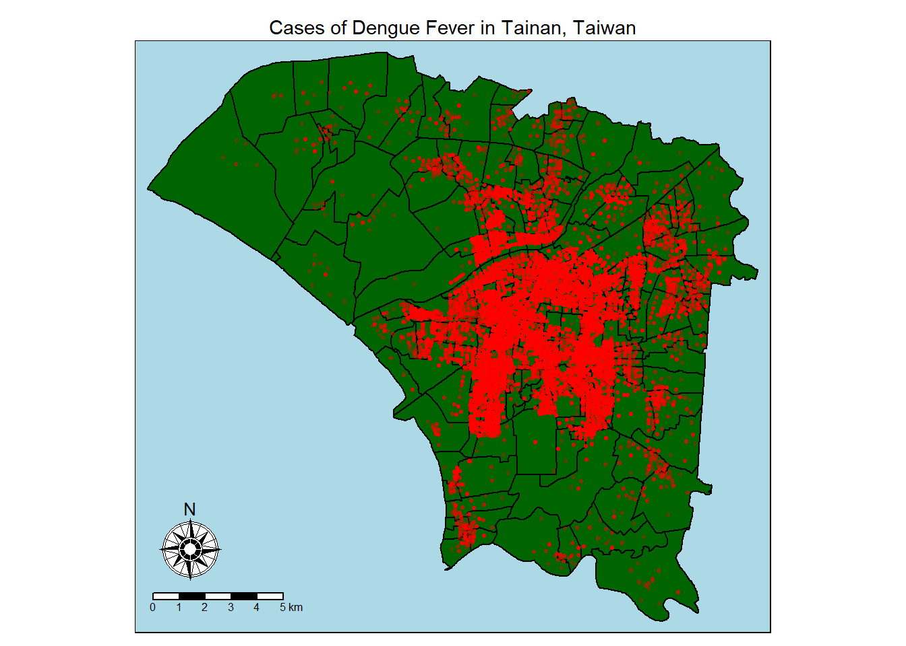
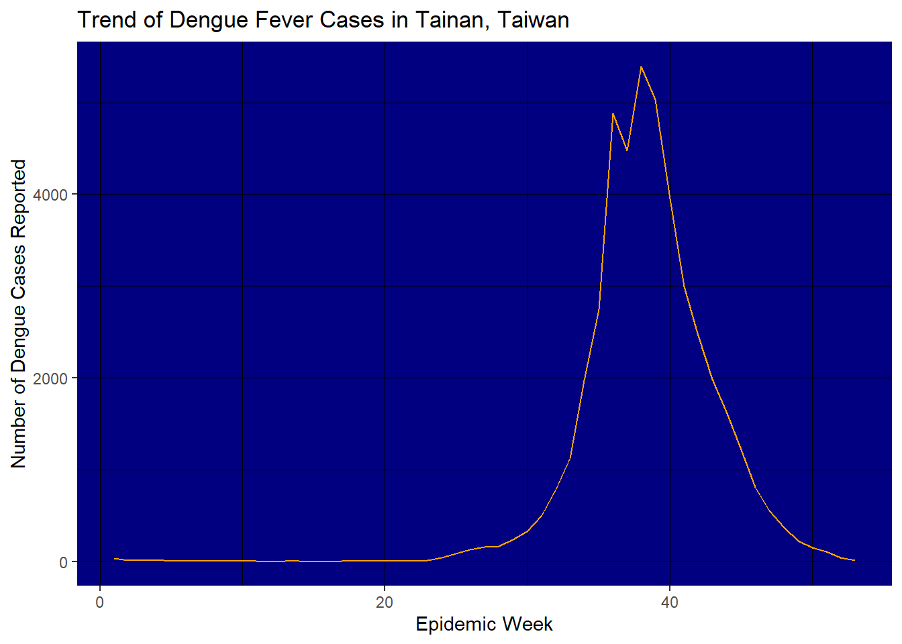
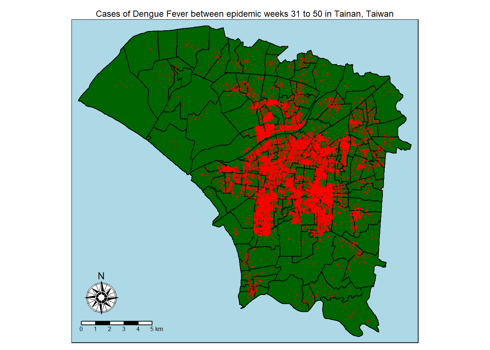
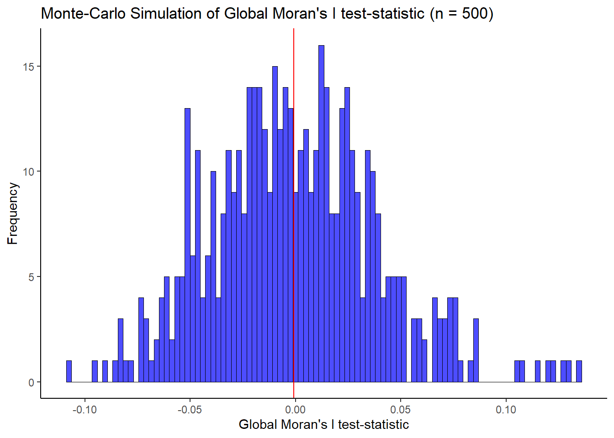
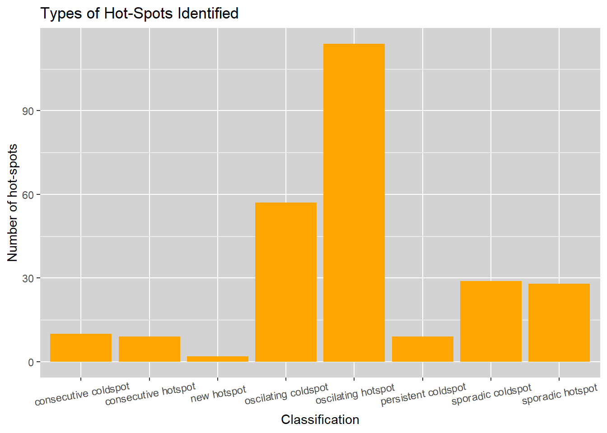

Reveal Code
pacman::p_load(sf, sfdep, Kendall, tmap, tidyverse, lubridate, ggplot2, htmlwidgets)Yung Qi Yang
March 3, 2024
As mentioned in the project outline, Taiwan has been very successful in containing the spread of Dengue Fever for many years. However, in 2023, especially between the epidemic weeks 31 to 50 (which corresponds to the end of July to the middle of December), Taiwan saw a dramatic spike in Dengue Fever cases. The interest of this report then, is to conduct an analysis into the cause of the outbreak, specifically in Tainan City, Taiwan, from a spatial autocorrelation perspective.
To do so, we will need the following R-packages:
The p_load() functionfrom the pacman package is used to load the libraries and automatically install them for the user if they aren’t already installed.
There are 2 datasets of interest to us in this report, the Tainan spatial data, and the dengue_daily aspatial data. The Tainan dataset contains spatial polygon information about the geographical boundaries of Tainan City, whilst the dengue_daily dataset is a record of all reported instances of dengue fever in Taiwan from 1998 till 2023.
To import the Tainan dataset, we require the the st_read() function from the sf package so as to preserve its spatial features. Additionally, st_transform() is required in order to cast the data set into the WGS84 coordinate reference system as the data is originally in TWD97, the Taiwanese CRS. We need to do so in order to visualise the data later on upon OpenStreetMap later as OpenStreetMap is coded in WGS84. From the glimpse() of the data, we can see that we were successful in doing so.
Reading layer `TAINAN_VILLAGE' from data source
`C:\Users\yungq\Desktop\SMU Modules\Y4S1\Geospatial Analysis and Applications\IS415 Course Website\Take-Home_Exercise\Take-Home_Exercise_02\Data\Geospatial'
using driver `ESRI Shapefile'
Simple feature collection with 649 features and 10 fields
Geometry type: POLYGON
Dimension: XY
Bounding box: xmin: 120.0269 ymin: 22.88751 xmax: 120.6563 ymax: 23.41374
Geodetic CRS: TWD97 VILLCODE COUNTYNAME TOWNNAME VILLNAME
Length:649 Length:649 Length:649 Length:649
Class :character Class :character Class :character Class :character
Mode :character Mode :character Mode :character Mode :character
VILLENG COUNTYID COUNTYCODE TOWNID
Length:649 Length:649 Length:649 Length:649
Class :character Class :character Class :character Class :character
Mode :character Mode :character Mode :character Mode :character
TOWNCODE NOTE geometry
Length:649 Length:649 POLYGON :649
Class :character Class :character epsg:4326 : 0
Mode :character Mode :character +proj=long...: 0 Rows: 649
Columns: 11
$ VILLCODE <chr> "67000280002", "67000350032", "67000150009", "67000150010",…
$ COUNTYNAME <chr> "臺南市", "臺南市", "臺南市", "臺南市", "臺南市", "臺南市",…
$ TOWNNAME <chr> "歸仁區", "安南區", "七股區", "七股區", "七股區", "七股區",…
$ VILLNAME <chr> "六甲里", "青草里", "溪南里", "七股里", "龍山里", "中寮里",…
$ VILLENG <chr> "Liujia Vil.", "Qingcao Vil.", "Xinan Vil.", "Qigu Vil.", "…
$ COUNTYID <chr> "D", "D", "D", "D", "D", "D", "D", "D", "D", "D", "D", "D",…
$ COUNTYCODE <chr> "67000", "67000", "67000", "67000", "67000", "67000", "6700…
$ TOWNID <chr> "D33", "D06", "D22", "D22", "D22", "D22", "D22", "D22", "D2…
$ TOWNCODE <chr> "67000280", "67000350", "67000150", "67000150", "67000150",…
$ NOTE <chr> NA, NA, NA, NA, NA, NA, NA, NA, NA, NA, NA, NA, NA, NA, NA,…
$ geometry <POLYGON [°]> POLYGON ((120.2725 22.95868..., POLYGON ((120.1176 …Plotting the Tainan geospatial data with tmap’s tm_polygons() function for a quick visualisation (and confirmation of the data):
Next, we will import the dengue_daily dataset, which is in csv (comma-separated values) format. We will rely on the read_csv() function from the readr package which is part of the tidyverse repository to do so. Additionally, we will not need the sf package for now as the spatial information in the dataset is in character format and thus, will not be recognised automatically by st_read() anyways:
Rows: 106,861
Columns: 26
$ 發病日 <date> 1998-01-02, 1998-01-03, 1998-01-13, 1998-01-15, 19…
$ 個案研判日 <chr> "None", "None", "None", "None", "None", "None", "No…
$ 通報日 <date> 1998-01-07, 1998-01-14, 1998-02-18, 1998-01-23, 19…
$ 性別 <chr> "男", "男", "男", "男", "男", "男", "男", "女", "女…
$ 年齡層 <chr> "40-44", "30-34", "55-59", "35-39", "55-59", "20-24…
$ 居住縣市 <chr> "屏東縣", "屏東縣", "宜蘭縣", "高雄市", "宜蘭縣", "…
$ 居住鄉鎮 <chr> "屏東市", "東港鎮", "宜蘭市", "苓雅區", "五結鄉", "…
$ 居住村里 <chr> "None", "None", "None", "None", "None", "None", "No…
$ 最小統計區 <chr> "A1320-0136-00", "A1303-0150-00", "A0201-0449-00", …
$ 最小統計區中心點X <chr> "120.505898941", "120.453657460", "121.751433765", …
$ 最小統計區中心點Y <chr> "22.464206650", "22.466338948", "24.749214667", "22…
$ 一級統計區 <chr> "A1320-04-008", "A1303-09-007", "A0201-23-006", "A6…
$ 二級統計區 <chr> "A1320-04", "A1303-09", "A0201-23", "A6408-10", "A0…
$ 感染縣市 <chr> "None", "None", "None", "None", "None", "None", "No…
$ 感染鄉鎮 <chr> "None", "None", "None", "None", "None", "None", "No…
$ 感染村里 <chr> "None", "None", "None", "None", "None", "None", "No…
$ 是否境外移入 <chr> "否", "是", "是", "否", "否", "是", "否", "否", "是…
$ 感染國家 <chr> "None", "None", "None", "None", "None", "None", "No…
$ 確定病例數 <dbl> 1, 1, 1, 1, 1, 1, 1, 1, 1, 1, 1, 1, 1, 1, 1, 1, 1, …
$ 居住村里代碼 <chr> "None", "None", "None", "None", "None", "None", "No…
$ 感染村里代碼 <chr> "None", "None", "None", "None", "None", "None", "No…
$ 血清型 <chr> "None", "第二型", "None", "None", "None", "None", "…
$ 內政部居住縣市代碼 <chr> "10013", "10013", "10002", "64", "10002", "68", "65…
$ 內政部居住鄉鎮代碼 <chr> "1001301", "1001303", "1000201", "6400800", "100020…
$ 內政部感染縣市代碼 <chr> "None", "None", "None", "None", "None", "None", "No…
$ 內政部感染鄉鎮代碼 <chr> "None", "None", "None", "None", "None", "None", "No…A quick investigation of the data yields the following:
A quick calculation reveals that there are 1560 rows with missing coordinate information. Considering the overall size of the data, it is reasonable, nor do we have much option anyways, to remove rows with missing spatial information from the dataset as that will have repurcussions on our analysis if we leave them be.
To do so, we rely upon the mutate() and filter() functions from dplyr(), whilst using as.numeric() to convert the coordinates into floating number values so that sf may recognise it. To convert the dataset into a simple features object, we explicitly parse the “最小統計區中心點X” and “最小統計區中心點Y” columns as spatial information, using the st_as_st() function to cast the dataframe, and the st_set_crs() function to specify the use of the WGS84 coordinate reference system.
發病日 個案研判日 通報日
Min. :1998-01-02 Length:106081 Min. :1998-01-07
1st Qu.:2014-10-29 Class :character 1st Qu.:2014-11-01
Median :2015-09-29 Mode :character Median :2015-10-01
Mean :2016-04-09 Mean :2016-04-12
3rd Qu.:2023-07-02 3rd Qu.:2023-07-05
Max. :2024-01-29 Max. :2024-01-29
性別 年齡層 居住縣市 居住鄉鎮
Length:106081 Length:106081 Length:106081 Length:106081
Class :character Class :character Class :character Class :character
Mode :character Mode :character Mode :character Mode :character
居住村里 最小統計區 一級統計區 二級統計區
Length:106081 Length:106081 Length:106081 Length:106081
Class :character Class :character Class :character Class :character
Mode :character Mode :character Mode :character Mode :character
感染縣市 感染鄉鎮 感染村里 是否境外移入
Length:106081 Length:106081 Length:106081 Length:106081
Class :character Class :character Class :character Class :character
Mode :character Mode :character Mode :character Mode :character
感染國家 確定病例數 居住村里代碼 感染村里代碼
Length:106081 Min. :1 Length:106081 Length:106081
Class :character 1st Qu.:1 Class :character Class :character
Mode :character Median :1 Mode :character Mode :character
Mean :1
3rd Qu.:1
Max. :2
血清型 內政部居住縣市代碼 內政部居住鄉鎮代碼 內政部感染縣市代碼
Length:106081 Length:106081 Length:106081 Length:106081
Class :character Class :character Class :character Class :character
Mode :character Mode :character Mode :character Mode :character
內政部感染鄉鎮代碼 geometry
Length:106081 POINT :106081
Class :character epsg:4326 : 0
Mode :character +proj=long...: 0
Rows: 106,081
Columns: 25
$ 發病日 <date> 1998-01-02, 1998-01-03, 1998-01-13, 1998-01-15, 19…
$ 個案研判日 <chr> "None", "None", "None", "None", "None", "None", "No…
$ 通報日 <date> 1998-01-07, 1998-01-14, 1998-02-18, 1998-01-23, 19…
$ 性別 <chr> "男", "男", "男", "男", "男", "男", "女", "女", "男…
$ 年齡層 <chr> "40-44", "30-34", "55-59", "35-39", "55-59", "40-44…
$ 居住縣市 <chr> "屏東縣", "屏東縣", "宜蘭縣", "高雄市", "宜蘭縣", "…
$ 居住鄉鎮 <chr> "屏東市", "東港鎮", "宜蘭市", "苓雅區", "五結鄉", "…
$ 居住村里 <chr> "None", "None", "None", "None", "None", "None", "No…
$ 最小統計區 <chr> "A1320-0136-00", "A1303-0150-00", "A0201-0449-00", …
$ 一級統計區 <chr> "A1320-04-008", "A1303-09-007", "A0201-23-006", "A6…
$ 二級統計區 <chr> "A1320-04", "A1303-09", "A0201-23", "A6408-10", "A0…
$ 感染縣市 <chr> "None", "None", "None", "None", "None", "None", "No…
$ 感染鄉鎮 <chr> "None", "None", "None", "None", "None", "None", "No…
$ 感染村里 <chr> "None", "None", "None", "None", "None", "None", "No…
$ 是否境外移入 <chr> "否", "是", "是", "否", "否", "否", "否", "是", "是…
$ 感染國家 <chr> "None", "None", "None", "None", "None", "None", "No…
$ 確定病例數 <dbl> 1, 1, 1, 1, 1, 1, 1, 1, 1, 1, 1, 1, 1, 1, 1, 1, 1, …
$ 居住村里代碼 <chr> "None", "None", "None", "None", "None", "None", "No…
$ 感染村里代碼 <chr> "None", "None", "None", "None", "None", "None", "No…
$ 血清型 <chr> "None", "第二型", "None", "None", "None", "None", "…
$ 內政部居住縣市代碼 <chr> "10013", "10013", "10002", "64", "10002", "65", "63…
$ 內政部居住鄉鎮代碼 <chr> "1001301", "1001303", "1000201", "6400800", "100020…
$ 內政部感染縣市代碼 <chr> "None", "None", "None", "None", "None", "None", "No…
$ 內政部感染鄉鎮代碼 <chr> "None", "None", "None", "None", "None", "None", "No…
$ geometry <POINT [°]> POINT (120.5059 22.46421), POINT (120.4537 22…As the dengue information covers the whole of Taiwan, the st_intersection() function is used to confine the spread of the data solely to Tainan, our project objective. st_union() is applied here to draw the outer boundaries of Tainan, and speed up the computation time.
A visualisation of the locations of dengue fever reports in Tainan is as follows:
tm_shape(tainan) +
tm_polygons(col = "darkgreen", border.col = "black") +
tm_layout(main.title = "Outbreak of Dengue Fever in Tainan, Taiwan", main.title.size = 0.9, main.title.position = "center", bg.color = "lightblue") +
tm_shape(dengue) +
tm_dots(size = 0.05, alpha = 0.2, col = "red") +
tm_compass(type = "rose", size = 3, position = "left") +
tm_scale_bar(width = 0.2, position = "left")
From the incident map drawn, we can see that the majority of dengue fever reports occur in the south-western part of the city which explains why a further restriction of the data to a couple of towns within Tainan was specified as part of the report. Below, we will constrict the Tainan spatial polygon data to the requested towns using the filter() function from dpylr, and produce an easy visualisation of the new area of focus.
Rows: 258
Columns: 11
$ VILLCODE <chr> "67000350032", "67000270011", "67000370005", "67000330004",…
$ COUNTYNAME <chr> "臺南市", "臺南市", "臺南市", "臺南市", "臺南市", "臺南市",…
$ TOWNNAME <chr> "安南區", "仁德區", "中西區", "南區", "安南區", "安南區", "…
$ VILLNAME <chr> "青草里", "保安里", "赤嵌里", "大成里", "城北里", "城南里",…
$ VILLENG <chr> "Qingcao Vil.", "Bao'an Vil.", "Chihkan Vil.", "Dacheng Vil…
$ COUNTYID <chr> "D", "D", "D", "D", "D", "D", "D", "D", "D", "D", "D", "D",…
$ COUNTYCODE <chr> "67000", "67000", "67000", "67000", "67000", "67000", "6700…
$ TOWNID <chr> "D06", "D32", "D08", "D02", "D06", "D06", "D08", "D06", "D0…
$ TOWNCODE <chr> "67000350", "67000270", "67000370", "67000330", "67000350",…
$ NOTE <chr> NA, NA, NA, NA, NA, NA, NA, NA, NA, NA, NA, NA, NA, NA, NA,…
$ geometry <POLYGON [°]> POLYGON ((120.1176 23.08387..., POLYGON ((120.2304 …tm_shape(tainan) +
tm_polygons(col = "darkgreen", border.col = "black") +
tm_layout(main.title = "Outbreak Region of Tainan, Taiwan", main.title.size = 0.9, main.title.position = "center", bg.color = "lightblue") +
tm_compass(type = "rose", size = 3, position = "left") +
tm_scale_bar(width = 0.2, position = "left")
As the boundary of the reports have been re-drawn, we will need to employ the st_intersection() function once again to restrict the dengue reports to the focus area:
By plotting the newly restricted daily_dengue data over the Tainan data subset, we can confirm that the restriction process has gone well:
tm_shape(tainan) +
tm_polygons(col = "darkgreen", border.col = "black") +
tm_layout(main.title = "Cases of Dengue Fever in Tainan, Taiwan", main.title.size = 0.9, main.title.position = "center", bg.color = "lightblue") +
tm_shape(dengue) +
tm_dots(size = 0.05, alpha = 0.2, col = "red") +
tm_compass(type = "rose", size = 3, position = "left") +
tm_scale_bar(width = 0.2, position = "left")
Next, we will need to reduce the dengue report data that we have to the time period which we are interested in, namely the 31st to 50th epidemic weeks of 2023. To do so, we first need to extract out the year and week information from the data. Thus, we apply the year() and isoweek() functions from the lubridate package to do so, and the mutate() function from dplyr to create these new columns in the data.
There are 3 functions to extract the week information from a date field in lubridate, but we will use isoweek() for the following reason. In order to conduct year-on-year analysis of the data, we will need a way to standardise the weeks extracted across the years. weeks() will not allow us to do so, whereas isoweek() will. Of course as we are not doing year-on-year analysis, choosing isoweek() will not make an impactful difference, but it still is good practice to do so. epiweek() is discounted on the other hand, as even though it standardises week extraction, it starts the week on a Sunday rather than a Monday as is standard in Taiwan.
dengue <- dengue %>%
mutate(發病年 = year(發病日), 發病周 = isoweek(發病日))
dengue %>%
group_by(發病周) %>%
summarise(dengue_count = n()) %>%
ggplot(aes(y = dengue_count, x = 發病周)) +
geom_line(col = "orange", scale_colour_hue = 100) +
labs(title = "Trend of Dengue Fever Cases in Tainan, Taiwan") +
xlab("Epidemic Week") +
ylab("Number of Dengue Cases Reported") +
theme(panel.background = element_rect(fill = "navy"),
panel.grid.major = element_line(color = "black", linewidth = 0.1),
panel.grid.minor = element_line(color = "black", linewidth = 0.1))
Using ggplot2 this time, we visualise above, the trend of dengue reports across our area of focus in Taiwan over 2023 on a weekly basis. From our graph, it becomes evident that the dengue reports does pick up dramatically from weeks 31 to 50 as the project outline states. Thus, we employ the filter() function once again to narrow down our study scope.
A visualisation of the base of our study using tmap is thus, as follows:
tm_shape(tainan) +
tm_polygons(col = "darkgreen", border.col = "black") +
tm_layout(main.title = "Cases of Dengue Fever between epidemic weeks 31 to 50 in Tainan, Taiwan", main.title.size = 0.75, main.title.position = "center", bg.color = "lightblue") +
tm_shape(dengue) +
tm_dots(size = 0.05, alpha = 0.2, col = "red") +
tm_compass(type = "rose", size = 3, position = "left") +
tm_scale_bar(width = 0.2, position = "left")
To conduct our global spatial autocorrelation analysis, we will employ Moran’s I statistics rather than Geary’s C as transmission of dengue occurs via the Aedes vector, and we should not lighten the impact of linear associations of dengue reports from our analysis.
To start, we need to count the number of reports which occurred in each polygon of our geographical scope. The st_intersects() function is employed over the st_intersection() function here for computation speed as we need not retain all information in the data, only just the counts. lengths() is used to compute the length of each element in the list generated by st_intersects().
Rows: 258
Columns: 12
$ VILLCODE <chr> "67000350032", "67000270011", "67000370005", "67000330004…
$ COUNTYNAME <chr> "臺南市", "臺南市", "臺南市", "臺南市", "臺南市", "臺南市…
$ TOWNNAME <chr> "安南區", "仁德區", "中西區", "南區", "安南區", "安南區",…
$ VILLNAME <chr> "青草里", "保安里", "赤嵌里", "大成里", "城北里", "城南里…
$ VILLENG <chr> "Qingcao Vil.", "Bao'an Vil.", "Chihkan Vil.", "Dacheng V…
$ COUNTYID <chr> "D", "D", "D", "D", "D", "D", "D", "D", "D", "D", "D", "D…
$ COUNTYCODE <chr> "67000", "67000", "67000", "67000", "67000", "67000", "67…
$ TOWNID <chr> "D06", "D32", "D08", "D02", "D06", "D06", "D08", "D06", "…
$ TOWNCODE <chr> "67000350", "67000270", "67000370", "67000330", "67000350…
$ NOTE <chr> NA, NA, NA, NA, NA, NA, NA, NA, NA, NA, NA, NA, NA, NA, N…
$ geometry <POLYGON [°]> POLYGON ((120.1176 23.08387..., POLYGON ((120.230…
$ dengue_count <int> 2, 19, 111, 29, 1, 10, 38, 44, 112, 65, 28, 2, 3, 11, 24,…Next, we need to compute the congruity weight matrix as Moran’s I is a congruity based method. The st_contiguity() is used to do so, with the queen option set to true as mentioned prior, the vector-transmission method of dengue fever does not allow us to discount neither the neighbours at the edge nor vertices. The st_weights() function is used to compute the weights of each polygon in the dataset, with style set to ‘W’ so that row-standardised weights are computed.
Neighbour list object:
Number of regions: 258
Number of nonzero links: 1526
Percentage nonzero weights: 2.29253
Average number of links: 5.914729
Link number distribution:
2 3 4 5 6 7 8 9 10 11 12 14
4 17 47 49 49 41 26 14 6 3 1 1
4 least connected regions:
77 117 138 238 with 2 links
1 most connected region:
128 with 14 linksAfter we obtain the row-standardised weight matrix of our spatial data, we can proceed to compute the global Moran’s statistic with it. global_moran_perm() is used to conduct a Monte-Carlo simulation of the global Moran’s I statistic with 500 simulations done. As in all Monte-Carlo simulations conducted in this report, 500 simulations will be used as it represents the largest amount of simulations my computer can conduct in a reasonable amount of time.
Additionally, set.seed() is used to ensure that the results of the simulation are repeatable.
Monte-Carlo simulation of Moran I
data: x
weights: listw
number of simulations + 1: 500
statistic = 0.46821, observed rank = 500, p-value < 2.2e-16
alternative hypothesis: two.sidedFrom the simulation results, we can see that the p-value is extremely low, leading to a conclusion that the incidents of dengue cases in Tainan show evidence of non-randomness at all reasonable levels of statistical significance. This result is not surprising as Aedes mosquitoes breed and travel short ranges, meaning that when they start carrying the Dengue virus, we expect people near to the initial carrier of dengue to suffer from it to. Also, we might think from the perspective that areas where Aedes mosquitoes thrive will frequently give rise to clusters of dengue cases as they are more prone to breeding of mosquitoes which makes it difficult to eliminate the vector in these areas.
We can visualise the Monte-Carlo simulation using geom_histogram() and geom_vline() from ggplot2 as below:
ggplot() +
geom_histogram(aes(global_moran_500$res[1:499]),
bins = 100,
fill = "blue",
color = "black",
alpha = 0.7,
size = 0.25) +
geom_vline(xintercept = mean(global_moran_500$res[1:499]),
color = "red") +
labs(title = "Monte-Carlo Simulation of Global Moran's I test-statistic (n = 500)") +
xlab("Global Moran's I test-statistic") +
ylab("Frequency") +
theme_classic()
For the same reasons as in the global spatial auto-correlation analysis, Moran’s I statistic will be used over Geary’s C here.
Like in our global spatial auto-correlation analysis, we will need a congruity weight matrix first as Moran’s I is a congruity-based method. Luckily, there is no obvious reason to compute a different congruity weight matrix and thus we will used the one generated in our global spatial auto-correlation analysis.
To apply the local Moran’s I test, the local_moran() function is used and simulated over 500 times. As the result of the local_moran() function is a nested list, unnest() is thus, needed to expand it into a readable format.
An interactive display of the Moran’s I statistic is shown below:
An interactive display of the p-values of the Moran’s I statistic is shown below:
An interactive display of the regions with a significant Moran’s I statistic (5% level) is shown below:
lisa_sig_leaflet <- lisa %>%
tm_shape(filter = .$p_ii <= 0.05) +
tm_fill("mean",
title = "Local Moran's I clusters",
interactive = TRUE,
alpha = 0.3) +
tm_borders(alpha = 1) +
tm_basemap("OpenStreetMap")
lisa_sig_leaflet <- tmap_leaflet(lisa_sig_leaflet)
saveWidget(lisa_sig_leaflet, "Screenshots/lisa_sig_leaflet.html")Beyond spatial auto-correlation analysis, we should also be interested in spatio-temporal analysis as the intensity of the outbreak over time will determine how easy is it to contain it. To do so, we will need to create a spacetime_cube object using the spacetime() function in sfdep.
However, before we can proceed to do so, we will need to create a dataframe of all possible combinations of spatio-temporal events across our dataset. This is done via the following code:
spatial_temporal_dengue_count <- crossing(dengue$發病周,
tainan$VILLCODE) %>%
rename("WEEK" = "dengue$發病周",
"VILLCODE" = "tainan$VILLCODE") %>%
left_join(tainan, by = "VILLCODE") %>%
select("WEEK", "VILLCODE", "geometry") %>%
st_as_sf(crs = "WGS84")
spatial_temporal_dengue_count$DENGUE_COUNT <- NA
for (t in 31:50) {
spatial_temporal_dengue_count[spatial_temporal_dengue_count$WEEK == t, "DENGUE_COUNT"] <-
st_intersects(
spatial_temporal_dengue_count %>%
filter(WEEK == t),
dengue %>%
filter(發病周 == t)
) %>%
lengths()
}
spatial_temporal_dengue_count <- spatial_temporal_dengue_count %>%
st_drop_geometry()
glimpse(spatial_temporal_dengue_count)
sum(spatial_temporal_dengue_count$DENGUE_COUNT)crossing() is used to create a dataframe of all possible weeks over all spatial regions in Tainan, resulting in a total of 5160 combinations. After which, st_intersects() and filter() are employed iteratively, to give a count of the number of dengue reports in each region over each time period.
Rows: 5,160
Columns: 3
$ WEEK <dbl> 31, 31, 31, 31, 31, 31, 31, 31, 31, 31, 31, 31, 31, 31, 3…
$ VILLCODE <chr> "67000270001", "67000270002", "67000270003", "67000270004…
$ DENGUE_COUNT <int> 0, 0, 1, 4, 2, 0, 1, 0, 1, 7, 1, 2, 0, 0, 0, 0, 42, 0, 0,…[1] 18800A sum() of our counts column matches up with the total number of cases in our reduced dengue_daily data.
[1] TRUEAnd is_spacetime_cube() confirms that we were successful. Thus, we can proceed to conduct the emerging hot-spot analysis using our spacetime cube, upon the DENGUE_COUNT feature which we created in the earlier step. The analysis is performed using the emerging_hotspot_analysis() function from sfdep, which utilises both Gerd-Ord’s Gi* statistic and Mann-Kendall statistic to do so. Thus, Kendall needs to be installed in the R-Environment as earlier.
Rows: 258
Columns: 4
$ location <chr> "67000350032", "67000270011", "67000370005", "670003300…
$ tau <dbl> 0.37894735, 0.36842102, 0.56842101, 0.41052628, 0.54736…
$ p_value <dbl> 2.124822e-02, 2.517831e-02, 5.174875e-04, 1.248217e-02,…
$ classification <chr> "oscilating coldspot", "oscilating coldspot", "consecut…Using ggplot2, we can visualise the frequency of each type of hot-spot identified in our emerging hot-spot analysis Monte-Carlo simulation.
ggplot(data = ehsa,
aes(x = classification)) +
geom_bar(fill = "orange") +
labs(title = "Types of Hot-Spots Identified") +
xlab("Classification") +
ylab("Number of hot-spots") +
theme(axis.text.x = element_text(angle = 10, hjust = 0.5, vjust = 0.7),
panel.background = element_rect(fill = "lightgrey")) 
And using tmap, we can display an interactive map of the different hot-spots over OpenStreetMap.
ehsa_leaflet <- tainan %>%
left_join(ehsa,
by = join_by(VILLCODE == location)) %>%
tm_shape(filter = .$p_value <= 0.05) +
tm_fill("classification",
interactive = TRUE,
alpha = 0.3,
title = "Classification") +
tm_borders(alpha = 1) +
tm_basemap("OpenStreetMap")
ehsa_leaflet <- tmap_leaflet(ehsa_leaflet)
saveWidget(ehsa_leaflet, "Screenshots/ehsa_leaflet.html")From the interactive map produced, we can see that most of the hot-spots are oscillating hot and cold spots, and are also mostly centered around the central parts of our map scope. There is actually quite an intuitive explanation. The proximity and human density of the hot/cold spots are probably really high considering their location, which will only make it easier for Dengue Fever to spread. Additionally, public facilities like pipes and drains are likely to be under higher stress, making it easier for Aedes mosquitoes to breed. Thus, it is likely that these areas will be most prone to dengue outbreaks and it is a testament to Taiwan’s dengue management that they are oscillation spots, because this mostly likely happens as they are able to contain outbreaks but not fast enough to stop the spread to other regions.